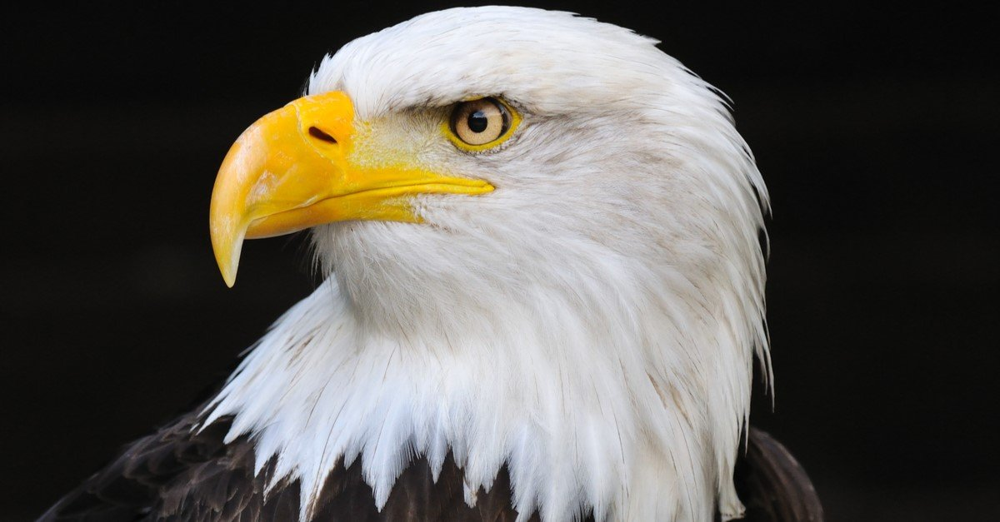

|  |
Eagles are large, powerfully built birds of prey, with heavy heads and beaks. Even the smallest eagles, such as the [[booted eagle] (Aquila pennata), which is comparable in size to a common buzzard (Buteo buteo) or red-tailed hawk (B. jamaicensis), have relatively longer and more evenly broad wings, and more direct, faster flight – despite the reduced size of aerodynamic feathers. Most eagles are larger than any other raptors apart from some vultures. The smallest species of eagle is the South Nicobar serpent eagle (Spilornis klossi), at 450 g (1 lb) and 40 cm (16 in). The largest species are discussed below. Like all birds of prey, eagles have very large hooked beaks for ripping flesh from their prey, strong, muscular legs, and powerful talons. The beak is typically heavier than that of most other birds of prey. Eagles' eyes are extremely powerful. It is estimated that the martial eagle, whose eyes are more than two times larger than the human eye, has a visual acuity up to 8 times that of humans. This acuity enables eagles to spot potential prey from a very long distance.[2] This keen eyesight is primarily attributed to their extremely large pupils which ensure minimal diffraction (scattering) of the incoming light. The female of all known species of eagles is larger than the male.[3][4]
Eagles normally build their nests, called eyries, in tall trees or on high cliffs. |